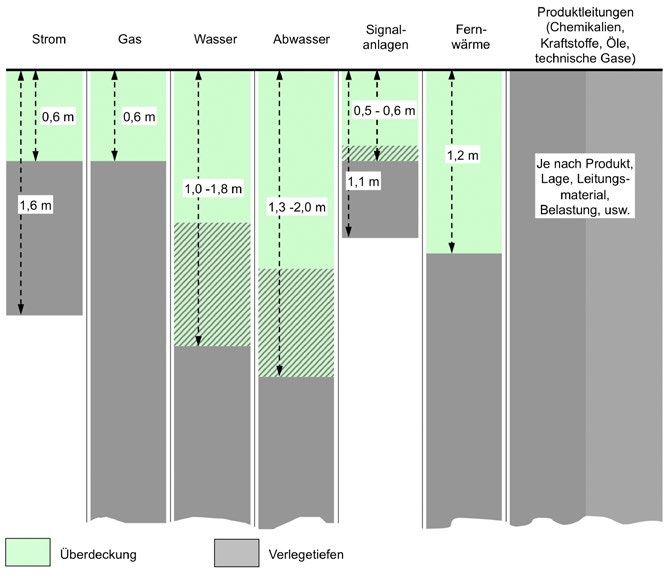

Der Auftragnehmer hat zur Vermeidung von Personen- und Sachschäden vor Beginn der Bauarbeiten zu ermitteln, ob im vorgesehenen Arbeitsbereich Leitungen vorhanden sind (siehe auch § 4 Nr. 1 ArbSchG, § 16 Unfallverhütungsvorschrift "Bauarbeiten" (DGUV Vorschriften 38 und 39) und DGUV Regeln 100-500 und 100-501 "Betreiben von Arbeitsmittel" Abschnitt 3.10 Kap. 2.12 "Betreiben von Erdbaumaschinen").
Dies gilt unabhängig von der Informationspflicht des Bauherrn oder Auftraggebers (siehe auch § 4 ArbSchG, der durch die Nennung im § 2 Abs. 1 der Baustellenverordnung (BaustellV) auch für Bauherren gilt), der eindeutigen Leistungsbeschreibung (siehe z. B. § 7 der Allgemeinen Bestimmungen für die Vergabe von Bauleistungen (VOB) Teil A) und der vollständigen, geeigneten Ausführungsunterlagen (siehe z. B. § 3 VOB Teil B).
Der arbeitsausführende Unternehmer bzw. die Unternehmerin hat sich beim Auftraggeber und bei den zuständigen Stellen über Art, Lage, Zustand und Verlauf von Leitungen zu erkundigen. Dies kann durch die Aushändigung und Erläuterung von Plänen und in verschiedenen Fällen durch eine zusätzliche Einweisung vor Ort geschehen, wobei auch die erforderlichen Schutzmaßnahmen festzulegen sind. Leider sind nur noch wenige Leitungsbetreiber bereit, eine Einweisung vor Ort durchzuführen. Darauf sollten die Auftragnehmer jedoch bestehen.
Zuständige Stellen können sein: Elektrizitäts-, Gas-, Fernwärme- und Wasserversorgungsunternehmen, Telekommunikationsunternehmen, private Betreiber von Versorgungsleitungen, Betreiber von Leitungen zur Versorgung von Streitkräften, Zweckverbände, Baugenehmigungsbehörden, Straßen-, Autobahnbau- oder Wasserwirtschaftsämter.
Der Verlauf und möglichst auch die Tiefenlage aller Leitungen im Baubereich sind deutlich zu kennzeichnen, z. B. Oberflächenmarkierung mit Sprühfarbe, Einmessen und Setzen von Pflöcken. Dabei ist zu beachten, dass bei fehlender Kenntnis der genauen Lage der Leitungen keine Gegenstände in den Boden getrieben werden dürfen.
Damit erdverlegte Leitungen leichter zu finden sind, können folgende Einrichtungen hilfreich sein:
Die genaue Position einer Leitung kann ermittelt werden:

Abb. 3 Regelverlegetiefe von Kabeln und Leitungen in öffentlichen Flächen (in Anlehnung an E DIN 1998)
Die Arbeitsverfahren und die damit verbundenen Sicherungs- und Schutzmaßnahmen sind mit den Leitungsbetreibern abzustimmen, insbesondere bei Rohrvortriebs-, Bohr-, Spreng- und Rammarbeiten.
Elektrische Leitungen sind nach Möglichkeit immer freischalten zu lassen.
Beim Antreffen von Leitungen (gilt auch für stillgelegte oder vorübergehend außer Betrieb genommene) sind die erforderlichen Maßnahmen immer mit dem Betreiber abzustimmen.
Erforderliche Sicherungs- und Schutzmaßnahmen:
Der Auftragnehmer muss vor Beginn der Arbeiten die Telefonnummern von Rettungsdiensten, Polizei, Feuerwehr, Leitungsbetreibern (Störungsdienste) und zuständigen Behörden, z. B. Umweltamt, Wasserwirtschaftsamt, Tiefbauamt, ermitteln.
Vor jeder neuen Arbeitsaufgabe und bei Arbeitsaufnahme nach längerer Arbeitsunterbrechung müssen die Beschäftigten eingewiesen werden.